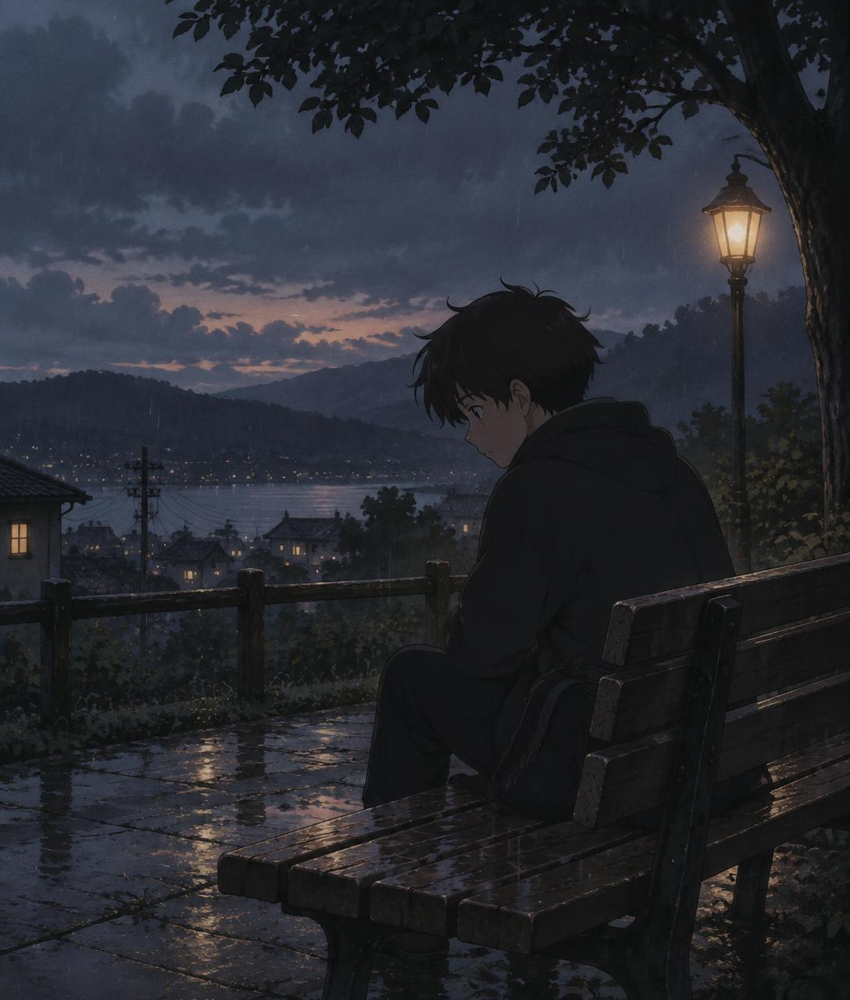

“We are not the same as we were before the rain began. And that is not a loss — it is a weathering.”
— left on the bench, 4:47 pmA quiet place, for heavy evenings
The rain keeps
falling on the
window, and
that is alright.
Sit a while. No one is asking for anything of you here.
Just a bench, a sky the color of dusk, and a little room to let the evening pass through you.

scene 01 — the bench
00:00
Passing thoughts
“Some evenings you are only allowed to exist quietly, the way the streetlamp is allowed to burn.”
— the last train, gone“The window fogged over again, and I let it. Some things are kinder when you cannot read them.”
— an unnamed letterLeave a thought on the bench
No names, no accounts — just the sound of someone else having sat here too.
0 of 400 characters